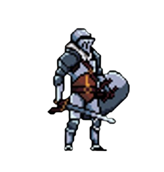
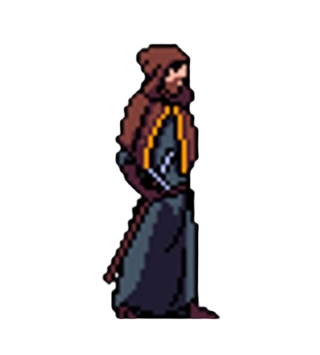
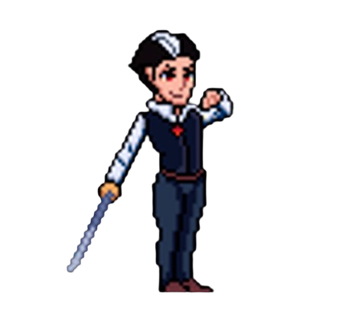

Resumo do Jogo
Valthorgard é um tributo aos clássicos de ação em plataforma 2D, reimaginado para uma experiência cooperativa local. Controle os irmãos Alaric Aethelgard e Erik Aethelgard em uma jornada épica para retomar seu legado. Um jogo feito para ser compartilhado, onde a proteção e o ataque se fundem em um só objetivo.
Personagens Principais

Alaric Aethelgard
É um guerreiro clássico, menos ágil que seu irmão Erik, porém mais resistente e protegido. Utiliza-se do grande escudo de Aethelgard como proteção primária e da espada Lamento do Norte para proferir seus ataques.

Erik Aethelgard
Erik é um bruxo manipulador de fogo, que veste túnicas de couro e tecido reforçado com runas de proteção. Ele é ágil e capaz de proferir ataques tanto de curta quanto longa distância, porém é mais frágil que Alaric.

Malakor o Déspota
Malakor é o vilão principal do jogo. Um Vampiro que combina uma presença predatória com maestria letal na esgrima, representando um grande desafio para os nossos protagonistas. Move-se pelo cenário de maneira ágil e executa sequências de ataques rápidos e precisos.